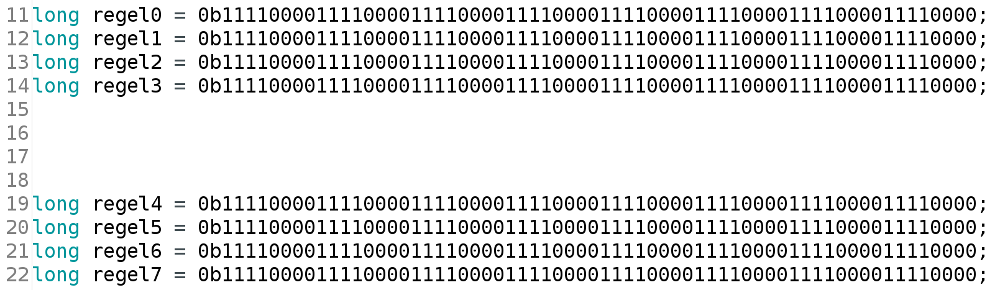

Wat het is
Het binaire stelsel is een fundamenteel getalsysteem dat alleen gebruikmaakt van twee cijfers, 0 en 1. Dit stelsel is de basis van digitale elektronica en informatica. In tegenstelling tot het decimale stelsel, dat tien cijfers heeft (0-9), maakt het binaire stelsel gebruik van de twee cijfers om informatie te representeren met behulp van enen en nullen. Dit is cruciaal omdat digitale elektronische schakelingen slechts twee toestanden kunnen aannemen: aan (1) en uit (0).
De toepassing van het binaire stelsel is wijdverspreid in de informatica, elektronica en digitale technologie. Het vormt de basis voor de interne werking van computers, waarin gegevens en instructies worden vertegenwoordigd en verwerkt in binair formaat. Alle digitale apparaten, van computers tot mobiele telefoons en geïntegreerde schakelingen, vertrouwen op het binaire stelsel voor gegevensopslag, verwerking en communicatie.
Hexadecimaal, ook bekend als het zestientallig stelsel, is een getalsysteem dat naast het binaire stelsel wordt gebruikt om binaire waarden op een compacte manier weer te geven. Het maakt gebruik van de cijfers 0-9 en de letters A-F om groepen van vier bits te representeren. Deze notatie wordt vaak gebruikt in programmeertalen, besturingssystemen en elektronica om geheugenadressen, kleurcodes en andere binaire gegevens te noteren op een meer leesbare en handige manier. Hexadecimale notatie maakt het bijvoorbeeld eenvoudig om complexe binaire gegevens te begrijpen en te communiceren in de informatica en digitale technologie. Het is een handig hulpmiddel voor professionals in deze domeinen om efficiënt te werken met binaire gegevens zonder lange reeksen van enen en nullen te moeten noteren.

Binaire getallen & rekenen
Binaire getallen en rekenen vormen de essentiële bouwstenen van de digitale wereld. Het binaire stelsel is de basis van digitale informatie, waarin elk getal wordt uitgedrukt als een reeks nullen en enen (0 en 1). Dit stelsel maakt het mogelijk om complexe informatie te vertegenwoordigen en te verwerken in computers en andere digitale systemen.
In het binaire stelsel vertegenwoordigt elke positie een macht van 2, net zoals in het decimale stelsel elke positie een macht van 10 vertegenwoordigt. Bijvoorbeeld, in het binaire stelsel staat '1010' voor 10 in het decimale stelsel, omdat het overeenkomt met 2^3 + 2^1, wat samen 10 is.
Binaire rekenkunde omvat basisbewerkingen zoals optellen, aftrekken, vermenigvuldigen en delen met behulp van nullen en enen. Deze bewerkingen zijn vaak eenvoudiger dan in het decimale stelsel omdat er slechts twee cijfers zijn. Optellen in binaire werkt op dezelfde manier als in het decimale stelsel, maar met een focus op het dragen van overgebleven eenheden (1) naar de volgende positie wanneer de som 2 bereikt.
Binaire rekenkunde vormt de basis voor digitale logica, waarbij logische poorten (AND, OR, NOT, XOR, enz.) gegevens in binaire vorm verwerken. Deze logische operaties zijn cruciaal voor de werking van digitale schakelingen en de uitvoering van computerprogramma's.
Kortom, binaire getallen en rekenen zijn de hoekstenen van de digitale wereld. Ze stellen computers in staat om informatie te verwerken en complexe taken uit te voeren door middel van eenvoudige schakelingen en logische operaties met nullen en enen als bouwstenen.
Toepassing
Het binaire stelsel is fundamenteel voor digitale systemen en heeft vele toepassingen in verschillende domeinen, waaronder computers, communicatie, elektronica en wiskunde. Hier zijn enkele manieren waarop het binaire stelsel wordt toegepast:
Computers en digitale systemen: Binaire code wordt gebruikt om gegevens en instructies in computers weer te geven. Elke letter, nummer of symbool wordt intern gerepresenteerd door een reeks nullen en enen, wat de basis vormt voor computerprogramma's en gegevensopslag.
Telecommunicatie: In telecommunicatie wordt informatie overgedragen in de vorm van digitale signalen, waarbij nullen en enen de basis vormen voor het coderen van berichten en gegevens. Dit zorgt voor een efficiënte gegevensoverdracht en -opslag.
Elektronica: Binaire schakelingen en logische poorten worden gebruikt in elektronica voor het ontwerpen van digitale schakelingen. Deze schakelingen voeren logische operaties uit en vormen de kern van rekenkundige en geheugeneenheden in computers.
Cijfersystemen: Binaire getallen worden gebruikt in wiskundige berekeningen, vooral in digitale rekenkunde en informatietheorie. Ze dienen als basis voor de ontwikkeling van algoritmen en complexe berekeningen in verschillende wetenschappelijke disciplines.
Codering en encryptie: Binaire representatie speelt een cruciale rol in codering en encryptie, waardoor gegevens kunnen worden beveiligd en veilig worden overgedragen.
Kortom, het binaire stelsel wordt op veel manieren toegepast in moderne technologie en wetenschap en is essentieel voor de werking van digitale systemen en computers. Het begrip van het binaire stelsel is cruciaal voor professionals in deze velden en draagt bij aan de vooruitgang van de technologie.
Hexadecimaal
Hexadecimaal, ook bekend als het zestientallig stelsel of hex, is een wiskundig getalsysteem dat gebruikt wordt om getallen en gegevens op een compacte en begrijpelijke manier te representeren. In het hexadecimale stelsel zijn er zestien cijfers, die bestaan uit de cijfers 0 tot 9 en de letters A tot F. Dit stelsel wordt veelvuldig gebruikt in computers, programmeertalen, en elektronica omwille van zijn efficiënte weergave van binaire data.
Een enkele hexadecimale cijfer vertegenwoordigt een groep van vier binaire cijfers (bits), wat nuttig is voor het omzetten en weergeven van binaire data. Hier volgt een voorbeeld van hoe dit werkt:
0000 in binair wordt 0 in hexadecimaal.
1111 in binair wordt F in hexadecimaal.
Door deze relatie tussen hexadecimale en binaire getallen kunnen programmeurs en systeembeheerders gegevens en geheugenadressen in een meer compacte en leesbare vorm noteren. Bovendien worden kleurcodes in beeldschermgrafieken vaak in hexadecimale notatie weergegeven, waarbij bijvoorbeeld #FF0000 de kleur rood aangeeft.
In samenvatting is het hexadecimale stelsel een nuttig hulpmiddel in de informatica en elektronica voor het efficiënt weergeven en manipuleren van binaire gegevens. Het vergemakkelijkt het begrijpen en werken met complexe binaire informatie en is daarom een belangrijk concept voor professionals in deze velden.